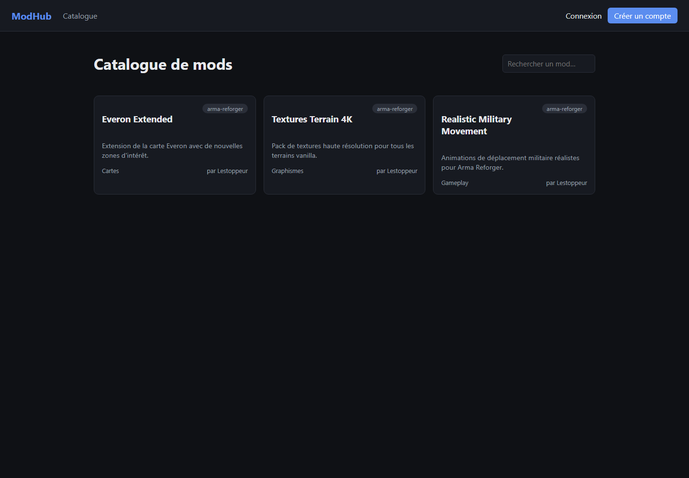
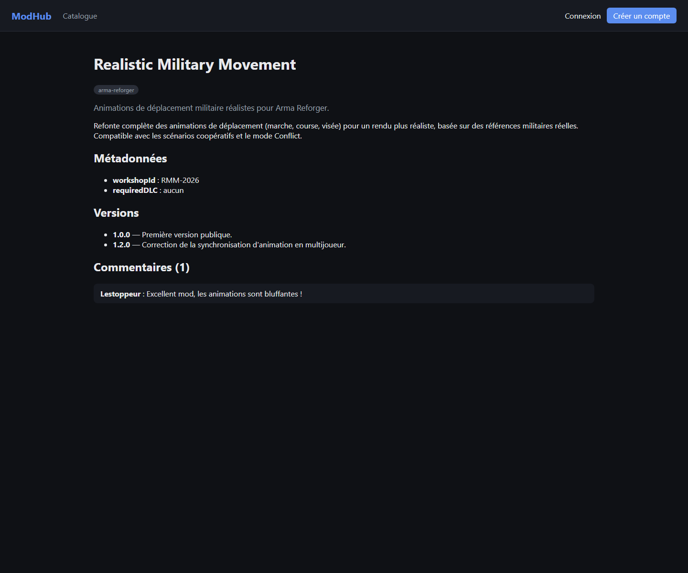

Je m'appelle Martin Di Nota. Avant de me lancer dans le développement web, j'ai passé un CAP serveur et travaillé dans la restauration. J'ai ensuite été cariste, puis plaquiste. Ce sont des métiers très éloignés du numérique, mais ils m'ont appris à tenir un rythme, à être fiable sur ce qu'on me confie et à travailler avec des équipes et des clients très différents. Je retrouve ces habitudes dans la façon dont je développe : avancer étape par étape et vérifier ce que je livre.
Je prépare le titre professionnel Développeur Web et Web Mobile au CEF. ModHub est le projet que j'ai construit pour couvrir les compétences du référentiel dans le cadre de cet examen blanc.
Ce qui me plaît dans ce métier, c'est de pouvoir créer des choses nouvelles qui servent à tout type de personne. J'ai envie d'aider les gens avec des outils que je fabrique moi-même. Quand j'ai une idée, je ne veux plus dépendre de quelqu'un d'autre pour la réaliser : apprendre à développer, c'est gagner cette autonomie et pouvoir donner vie à mes idées, de la base de données jusqu'à l'écran.
Le choix de ModHub vient aussi de là. Je fais du modding sur Arma Reforger, et j'ai vu de près ce que les créateurs de mods et les joueurs cherchent : un endroit clair pour publier, trouver et suivre des mods.
ModHub est une plateforme où les créateurs de mods pour jeux vidéo publient leurs créations, avec leurs versions et leur changelog, et où la communauté peut les découvrir, les noter, les commenter et suivre leurs mises à jour. Je suis parti d'un constat : les communautés de modding s'organisent surtout sur des forums, des serveurs Discord ou des sites tiers, qui ne sont pas faits pour suivre un mod dans la durée (versions, compatibilité, retours des joueurs).
Je fais moi-même du modding sur Arma Reforger (moteur Enfusion, langage EnforceScript). J'ai notamment corrigé des comportements du jeu de base, par exemple une limite de véhicules qui n'était pas appliquée quand on plaçait les véhicules depuis l'éditeur, et j'ai réalisé un mod qui alimente un site de statistiques pour les joueurs. J'ai donc vu de l'intérieur ce dont un créateur a besoin : publier une version, savoir si elle est utilisée, recevoir des retours. C'est de là qu'est venue l'idée de ModHub.
| Public | Besoin |
|---|---|
| Créateurs de mods | Publier un mod, gérer ses versions, suivre son adoption (téléchargements, notes) |
| Joueurs / communauté | Trouver rapidement des mods pertinents, évaluer leur qualité avant de les installer, suivre les mods qui les intéressent |
| Modérateurs | Garder un catalogue de qualité en validant les publications avant diffusion publique |
Je suis parti du besoin, puis j'ai fixé l'architecture avant d'écrire du code. J'ai ensuite avancé par tranches complètes et utilisables : d'abord l'authentification de bout en bout, puis le cœur métier des mods, puis l'interface, puis la sécurité. Je vérifiais chaque tranche au fur et à mesure au lieu de tout tester à la fin.
| Besoin | Outil |
|---|---|
| Gestion de version | Git, dépôt hébergé sur GitHub |
| Hébergement base relationnelle (développement) | Supabase (PostgreSQL managé) |
| Base NoSQL (développement) | MongoDB local |
| Tests | Vitest + Supertest (tests d'intégration) |
| Suivi de tâches | Jalons suivis via l'historique des commits Git (une tranche verticale livrable par commit) |
J'ai réalisé le projet en 3 jours, du 12 au 14 septembre 2026, dans le cadre de l'examen blanc. Le travail est découpé en quatre tranches livrables, chacune correspondant à un commit Git : mise en place du projet et authentification, cœur métier des mods (PostgreSQL + MongoDB), interface, puis renforcement de la sécurité.
L'application est composée de deux projets distincts qui communiquent par une API REST :
ModHub/ ├── frontend/ React 19 + TypeScript (Vite) — interface utilisateur ├── backend/ Node.js + Express 5 + TypeScript — API REST │ ├── PostgreSQL (Prisma 7) → données relationnelles │ └── MongoDB (Mongoose) → fil d'activité, métadonnées par jeu └── README.md
Le backend est organisé en couches. Chaque couche a un seul rôle, ce qui sépare l'accès aux données de la logique métier :
Requête HTTP │ ▼ routes/ → déclaration des routes Express, middlewares (auth, rôles) │ ▼ controllers/ → validation des entrées (zod), (dé)sérialisation HTTP │ ▼ services/ → logique métier pure (règles, calculs, orchestration) │ ▼ repositories/ → accès aux données, séparés par technologie ├── sql/ → Prisma / PostgreSQL └── nosql/ → Mongoose / MongoDB
mod.service.ts) appelle un repository SQL et un repository
NoSQL sans savoir comment chacun fonctionne. Grâce à cette séparation, le code SQL et le code NoSQL restent
chacun dans leur dossier et ne se mélangent pas.
Sept tables, avec clés étrangères et contraintes d'unicité pour garantir l'intégrité (une note = un couple utilisateur/mod unique, suppression en cascade des données dépendantes d'un mod supprimé) :
User (id, email UNIQUE, passwordHash, displayName, role, createdAt) Category (id, name UNIQUE, slug UNIQUE) Mod (id, title, slug UNIQUE, summary, description, gameKey, status, authorId → User, categoryId → Category) Version (id, modId → Mod, versionLabel, changelog, fileUrl, fileSizeBytes, downloadCount) UNIQUE(modId, versionLabel) Rating (id, modId → Mod, userId → User, value) UNIQUE(modId, userId) Comment (id, modId → Mod, userId → User, body, createdAt) Follow (id, modId → Mod, userId → User) UNIQUE(modId, userId)
| Collection | Usage | Pourquoi NoSQL plutôt que relationnel |
|---|---|---|
ActivityEvent | Fil d'activité (nouveau mod, nouvelle version, nouveau commentaire) | La forme du document varie selon le type d'événement (payload
différent pour chaque type) ; écriture fréquente, pas de besoin de jointure |
ModMetadata | Champs spécifiques à chaque jeu (ex. identifiant Workshop et DLC requis pour un mod Arma Reforger, version du moteur et loader pour un mod Minecraft) | Schéma
volontairement variable selon gameKey — le modéliser en relationnel imposerait un
anti-pattern de type EAV (Entity-Attribute-Value) |
| Choix | Justification |
|---|---|
| React + TypeScript | Typage statique de bout en bout (partagé conceptuellement entre les types d'API et les composants), écosystème très documenté, adapté à une interface fortement interactive |
| Express 5 | Minimaliste, laisse le contrôle total sur l'architecture (pas de convention imposée
type NestJS), gestion native des erreurs asynchrones (une exception levée dans un contrôleur async est automatiquement transmise au middleware d'erreur, sans bloc try/catch répétitif) |
| Prisma | Requêtes typées de bout en bout, migrations versionnées et rejouables, lisibilité du schéma comme documentation vivante de la base |
| PostgreSQL (Supabase) | Base relationnelle robuste, hébergement managé gratuit qui évite une dépendance à Docker/WSL2 indisponible sur la machine de développement |
| MongoDB | Adapté aux deux cas d'usage identifiés (schéma variable, écriture d'événements), bibliothèque Mongoose mature pour la validation de schéma côté application |
| JWT + bcryptjs | Authentification sans état côté serveur (scalable horizontalement), hachage de mot de passe avec coût réglable ; bcryptjs plutôt que bcrypt pour éviter une dépendance à compilation native |
J'ai schématisé les deux écrans principaux (catalogue et fiche mod) en basse fidélité, pour montrer la structure retenue : hiérarchie de l'information, zones d'action, parcours de l'utilisateur, sans se soucier du rendu graphique.
Toute la mise en forme est dans une seule feuille de style (index.css), avec les
couleurs définies une fois pour toutes sous forme de variables CSS. Je n'ai pas utilisé de framework CSS : sur un
projet de cette taille, je préfère garder la maîtrise du rendu et éviter une dépendance de plus.
:root {
--color-bg: #0f1115;
--color-surface: #171a21;
--color-accent: #5b8def;
--color-danger: #e0554f;
--color-success: #3fb27f;
}
La mise en page utilise Flexbox et CSS Grid (grid-template-columns:
repeat(auto-fill, minmax(260px, 1fr)) pour la grille de mods), ce qui rend le catalogue responsive sans
media query dédiée pour les tailles intermédiaires.

Voici les principaux mécanismes dynamiques de l'application :
useEffect(() => {
const handle = setTimeout(() => {
setLoading(true);
modsApi.search({ q: query || undefined })
.then((res) => setItems(res.items))
.finally(() => setLoading(false));
}, 300);
return () => clearTimeout(handle);
}, [query]);
useAuth)
qui persiste la session en localStorage et pilote l'affichage conditionnel de la
navigation (liens "Publier un mod", "Modération" visibles seulement selon l'état de connexion et le rôle).ProtectedRoute) redirigeant vers la page de
connexion si l'utilisateur n'est pas authentifié, ou vers l'accueil si son rôle ne correspond pas à la page
demandée (ex. un utilisateur non admin ne peut pas accéder à /admin).
Le schéma PostgreSQL est défini et versionné via Prisma (prisma/schema.prisma),
avec migrations SQL générées et historisées dans prisma/migrations/. Extrait :
model Mod {
id String @id @default(uuid())
title String
slug String @unique
status ModStatus @default(PENDING)
authorId String
author User @relation(fields: [authorId], references: [id], onDelete: Cascade)
categoryId String
category Category @relation(fields: [categoryId], references: [id])
versions Version[]
ratings Rating[]
@@index([gameKey])
@@index([status])
}
Les contraintes d'unicité composites (@@unique([modId, userId]) sur
Rating et Follow) garantissent au niveau base de données
qu'un utilisateur ne peut noter ou suivre un mod qu'une seule fois, sans dépendre uniquement d'une vérification
applicative.
Deux jeux de repositories cohabitent, chacun encapsulant sa technologie :
// repositories/sql/mod.repository.ts — Prisma / PostgreSQL
search(filters, skip, take) {
const where: Prisma.ModWhereInput = {
status: filters.status ?? 'APPROVED',
...(filters.search && { OR: [
{ title: { contains: filters.search, mode: 'insensitive' } },
{ summary: { contains: filters.search, mode: 'insensitive' } },
]}),
};
return prisma.$transaction([
prisma.mod.findMany({ where, skip, take, orderBy: { createdAt: 'desc' } }),
prisma.mod.count({ where }),
]);
}
// repositories/nosql/activity.repository.ts — Mongoose / MongoDB
setMetadata(modId, gameKey, fields) {
return ModMetadataModel.findOneAndUpdate(
{ modId },
{ modId, gameKey, fields },
{ upsert: true, returnDocument: 'after' },
);
}
Le service métier orchestre les deux sans les mélanger : la création d'un mod écrit l'entité principale en PostgreSQL puis, si des métadonnées spécifiques au jeu sont fournies, les stocke séparément en MongoDB et journalise l'événement dans le fil d'activité :
async createMod(authorId, input) {
const mod = await modRepository.create({ ...input, author: { connect: { id: authorId } } });
if (input.gameMetadata) {
await activityRepository.setMetadata(mod.id, input.gameKey, input.gameMetadata);
}
await activityRepository.record('NEW_MOD', mod.id, authorId, { title: mod.title });
return mod;
}
tests/mods.test.ts) qui
crée un mod via l'API, puis vérifie directement en base que le document MongoDB correspondant existe avec les
bons champs — la preuve que les deux bases sont réellement utilisées, pas seulement déclarées dans le schéma.
La couche services/ concentre les règles métier, par exemple le contrôle de
propriété avant l'ajout d'une version :
async addVersion(modId, authorId, input) {
const mod = await modRepository.findById(modId);
if (!mod) throw new AppError(404, 'Mod introuvable');
if (mod.authorId !== authorId) {
throw new AppError(403, "Seul l'auteur du mod peut publier une version");
}
const version = await modRepository.addVersion(modId, input);
await activityRepository.record('NEW_VERSION', modId, authorId, { versionLabel: version.versionLabel });
return version;
}
Autres composants métier notables : calcul de moyenne de notes via agrégation Prisma
(prisma.rating.aggregate), génération de slugs uniques avec normalisation Unicode
(suppression des accents), workflow de modération à trois états (PENDING → APPROVED /
REJECTED) contrôlé par le rôle de l'utilisateur.
| Risque (OWASP) | Mesure appliquée |
|---|---|
| Injection SQL | Aucune requête SQL brute concaténée ; toutes les requêtes passent par l'API typée de Prisma (requêtes paramétrées par construction) |
| Injection NoSQL | Les requêtes Mongoose utilisent l'API objet du driver, jamais de construction de requête à partir d'une chaîne fournie par l'utilisateur |
| Mots de passe | Hachage bcryptjs (12 rounds), jamais stocké ni renvoyé en clair ; le message d'erreur de connexion est identique pour "email inconnu" et "mot de passe incorrect" (évite l'énumération de comptes) |
| Autorisation | Vérification de propriété et de rôle systématique côté service (pas seulement côté
route) ; ex. modération réservée au rôle ADMIN via middleware
requireRole |
| Fuite d'information | Middleware d'erreur centralisé : toute erreur non prévue renvoie un message générique au client, la stack trace complète n'est journalisée que côté serveur |
| Brute force / credential stuffing | Limitation de débit (express-rate-limit,
20 requêtes / 15 min) sur les routes d'authentification |
| CORS | Origine restreinte à l'URL du front-end configurée en variable d'environnement, plutôt qu'une politique ouverte à tout domaine |
| Exposition de données via Supabase | Row Level Security activée sur les sept tables PostgreSQL (l'accès applicatif passe par le rôle propriétaire via Prisma, qui n'est pas soumis à RLS ; sans policy, l'accès via la clé publique Supabase est donc refusé par défaut) |
| Secrets | Aucun secret commité : .env exclu du dépôt, seul
.env.example (valeurs factices) est versionné |
multer est installée
mais pas encore branchée). Je l'ai laissé de côté pour tenir le délai de 3 jours, et c'est la première évolution
que je ferais.
J'ai choisi d'écrire des tests d'intégration plutôt que des tests unitaires avec des mocks :
chaque test lance l'application réelle (createApp()), l'appelle en HTTP avec Supertest
sur les vraies bases de développement, puis supprime ce qu'il a créé. C'est un peu plus lent, mais ça prouve que
l'application fonctionne vraiment de bout en bout.
it('crée un mod (Postgres) et enregistre ses métadonnées jeu (Mongo)', async () => {
const res = await request(app).post('/api/mods')
.set('Authorization', `Bearer ${token}`)
.send({ title: '...', gameKey: 'arma-reforger', gameMetadata: { workshopId: 'RMM-001' } });
expect(res.status).toBe(201);
const metadata = await ModMetadataModel.findOne({ modId: res.body.id }).lean();
expect(metadata?.fields.workshopId).toBe('RMM-001');
});
| Suite | Couverture |
|---|---|
tests/auth.test.ts | Inscription (validation mot de passe, unicité email), connexion (identifiants valides/invalides) |
tests/mods.test.ts | Création de mod avec métadonnées croisées SQL/NoSQL, ajout de version, contrôle de propriété (rejet 403), lecture d'une fiche mod fusionnant les deux sources |
Résultat : 9 tests, 9 succès lors de la dernière exécution complète (12/09/2026), contre les bases réelles (Supabase + MongoDB).
string |
string[]) : traité par une fonction utilitaire de validation plutôt qu'un contournement de type.Au-delà de la technique, ce projet m'a appris à découper un gros travail en étapes que je peux vérifier une par une.
| Terme | Définition |
|---|---|
| ORM | Object-Relational Mapping — bibliothèque faisant correspondre les tables d'une base relationnelle à des objets manipulables dans le code (ici, Prisma) |
| JWT | JSON Web Token — jeton signé transmettant l'identité et le rôle d'un utilisateur authentifié sans nécessiter de session stockée côté serveur |
| EAV | Entity-Attribute-Value — anti-pattern relationnel consistant à stocker des attributs dynamiques ligne par ligne plutôt qu'en colonnes, évité ici grâce au NoSQL |
| RLS | Row Level Security — mécanisme PostgreSQL restreignant l'accès aux lignes d'une table selon le rôle de connexion |